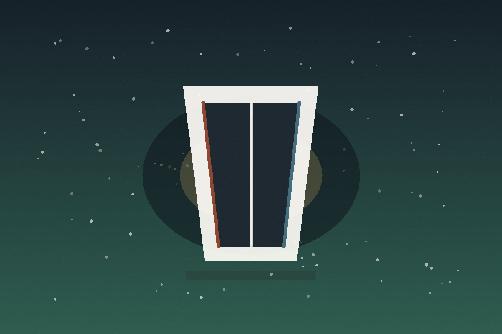
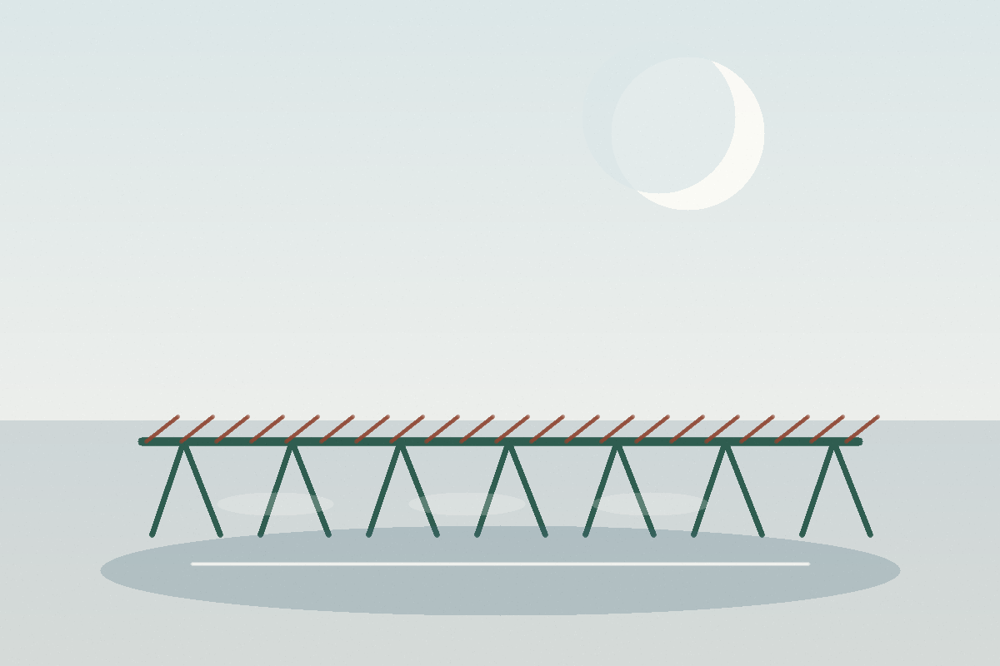
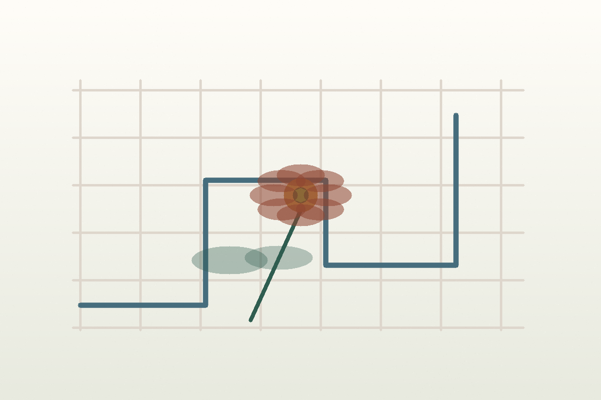
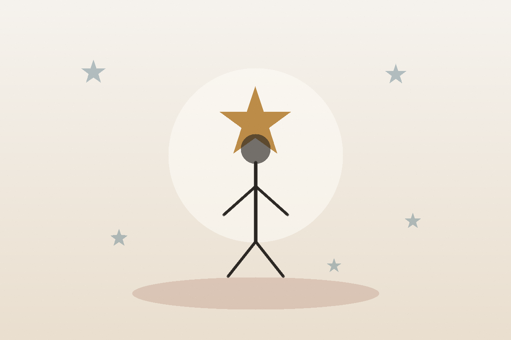

1. Dark Matter, de Blake Crouch
Título do post: A Vida Que Eu Não Escolhi Também Me Escolheria?
Open Pages é um blog simples e pessoal sobre livros. Um espaço calmo para registrar impressões, perguntas, desconfortos, descobertas e aquelas ideias que continuam voltando muito tempo depois da leitura.
Não é um lugar para “explicar” livros de forma definitiva. É um lugar para sentar perto deles por mais um pouco.
Open Pages nasceu da vontade de ler sem pressa e escrever sem tentar parecer especialista. Aqui, cada livro é tratado como uma conversa: às vezes clara, às vezes estranha, às vezes dolorosa, mas sempre aberta.
A ideia é compartilhar pequenas resenhas, perguntas sinceras e uma frase ou ideia que ficou ecoando depois da última página.
A melhor forma de ler o Open Pages é sem pressa. Escolha um livro, leia a pequena reflexão, pare nas perguntas e veja se alguma delas também mexe com você.
Você não precisa concordar com nada. Só precisa entrar com curiosidade.

1. Dark Matter, de Blake Crouch
Título do post: A Vida Que Eu Não Escolhi Também Me Escolheria?

2. White Nights, de Fyodor Dostoevsky
Título do post: Quatro Noites Para Sonhar Uma Vida Inteira

3. Flowers for Algernon, de Daniel Keyes
Título do post: Quando Entender o Mundo Também Dói
4. O Alienista, de Machado de Assis
Título do post: Quem Decide Onde Termina a Razão?

5. A Hora da Estrela, de Clarice Lispector
Título do post: Uma Vida Pequena Não É Uma Vida Menor